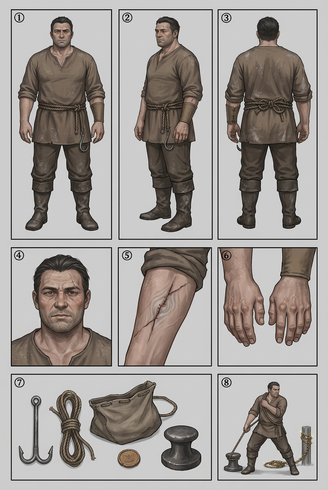

BHAN — model sheet
Chapter 002 · first appearance. The drawing reference for every page this character is on — the eight required panels — front · side · back · face · detail · hands · kit · action, in the house panel order, per the character art spec.

🔍 click to zoom
1front2side3back4face5detail (the re-sewn left forearm)6hands7kit8action (mid-haul at the bollard)
Drawing brief
- Build: broad-shouldered and stocky, not tall. A body built by carrying, not by fighting — heavy through the shoulders and chest, thick neck, short legs, belly softened by years of hauling rather than training. Never drawn lean, never drawn heroic.
- Face: plain and unglamorous — round jaw, weathered skin permanently dusted with pale salt from the docks, dark hair cut short and shoved back without looking, three-day stubble, one small old scar over the left brow. Patient, tired, kind around the eyes; the kind of face that is always slightly too polite for the sentence it is saying.
- Posture: standing, weight on both feet, hands loose. He is a man who has been told he is large so often that he has stopped using it.
- Costume: coarse dock-brown canvas hauling tunic, sleeves rolled to the elbow and stayed there, rope belt (a real hauling rope, double-knotted — the knot is not decorative), one canvas bracer worn only on the right forearm, salt-stained boots to the knee, a short-rope hauling hook hung at the belt. No jewellery, no sigil, no Council anything.
- The arm: the story is on the left forearm. A thin dark dock-brown debt line, laid along the bone, torn twice and re-sewn twice — the mends are visible and uneven, and the second one is finer than the first. Inside the newest seam runs a faint pale whorl-grain that belongs to no owner (Ch. 002 Page 002; canon rule — whorl-grain gets no owner on panel). Do not glow it, do not colour it attractively: it is a mark somebody else made and left behind.
- Hands: rope callus across the palm and the thumb base, salt under the nails, a hook-scar at the right index. Slot 6 of the ref sheet is the reference — draw these hands every time he lifts a sack.
- Kit: hauling hook, coiled wet rope over the shoulder or at the belt, sling sack for grain, a small wax wage chit that he keeps flat in his sleeve, and whatever iron is nearest — he is always in frame with the docks' hardware.
- Silhouette test: broad salt-dusted shape + rope belt + the hauler's hook hanging at the hip. He should read as load-bearing, never as a threat.
- Ash: the docks are downstream of the burning; salt on his shoulders, ash in his hairline, and he never brushes either off.
Rule: Bhan is drawn patient. Every panel, the composition is doing something unpleasant to him and his body is not reacting. When he finally does react — Ch. 002 Page 008, "Then somebody's been holding me still" — the reader must feel the floor move. Keep him still until then.
Full written sheet, canon rules and card-game line: Bhan